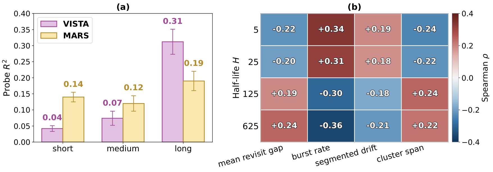

目录 · 10 节
1问题：一个缓存记忆为什么会“偏科”？2整体结构：先按遗忘速度写，再按需挑着读3写入：用“半衰期”给每条轨道定遗忘速度4读取：每个种子只挑两条轨道5实验：收益随历史变长而变大6消融：收益不是靠多加容量换来的7上线成本8我认为它的局限9一个长序列团队可以怎么试10一句话结论长历史推荐模型为了省算力，常把用户几千条行为压成一小组向量缓存起来，给成百上千个候选打分时反复使用。这篇来自 Duke 和 Meta 的论文发现，这种压缩是偏科的：从 Meta 的 VISTA（一种把长历史压成固定向量缓存的模型）缓存里，几乎读不出用户最近 30 条行为是什么，200 条以前的老行为反而保留得最好。问题不在压得不够狠，而在所有时间尺度被挤进同一个记忆里，最近的兴趣被老兴趣盖住了。论文提出的 MARS（多分辨率自适应路由记忆）把历史同时写进几条遗忘速度不同的记忆轨道，再让每个缓存向量只挑两条来读。在行为最长的快手 KuaiRec 数据上，AUC 从 0.793 提到 0.804，打分延迟只多约 2%。
这是今天个性化方向里最值得做长序列的团队细读的一篇。原因有三：它先用一个干净的探针实验证明了问题存在，而不是先抛方法；它保持了缓存接口不变，打分模块一行不改，落地阻力小；消融里把“多加容量”“硬切时间窗”这些最容易想到的替代方案都试过了，都不如它。短板也很明确：全部是离线实验，短历史用户几乎没有收益。
问题：一个缓存记忆为什么会“偏科”？
先看一个短视频场景（示意）。某用户在 App 上有 3000 条观看记录：
| 时间段（示意） | 行为 | 对下一次推荐的意义 |
|---|---|---|
| 最近 20 分钟 | 连刷十几条家常菜教程 | 当下最强的意图 |
| 最近两周 | 断断续续看露营装备 | 中期兴趣，正在升温 |
| 过去两年 | 一直看篮球集锦 | 稳定偏好 |
排序阶段每个请求要给上千个候选打分，不可能每个候选都把 3000 条历史重新过一遍。VISTA 这类“摘要式”模型的做法是：先把整段历史压成十几个固定长度的向量（论文叫种子记忆），缓存起来，候选只和这组向量做注意力。打分成本因此和历史长度无关。
问题在于，这组向量是在不知道候选是谁的情况下压出来的，所有时间尺度共用同一个记忆。论文的诊断实验很直接：从 KuaiRec 选 512 个长历史用户，把每人的历史按远近切成三段，再看能不能从缓存向量里用线性回归“读回”每段内容的平均特征，也就是这一段里所有物品 embedding 的平均向量。读得越准，说明这段信息保留得越好。

VISTA 读回最近 30 条行为的 R² 只有 0.04，几乎等于没存；200 条以前的老行为是 0.31。也就是说，上面例子里那十几条家常菜视频，进了缓存之后基本被篮球淹没了。论文把这叫“时间混叠”：不同时间尺度的证据在压缩时搅在一起，后面的打分模块再怎么做注意力也分不回来。
整体结构：先按遗忘速度写，再按需挑着读

| 步骤 | 做什么 | 产出 |
|---|---|---|
| 写入 | 整段历史同时写进 M 条轨道，每条轨道遗忘速度不同 | 每条轨道一个状态矩阵 |
| 路由 | 每个种子向量给 M 条轨道打分，只选得分最高的 k 条 | 每个种子的读取名单 |
| 读取 | 种子向量乘以选中轨道的状态矩阵，得到读出向量，再残差更新自己 | 更新后的种子，进入下一层 |
| 缓存 | 最后一层的 J 个种子就是用户记忆 | 和 VISTA 同样大小的缓存 |
| 打分 | 候选对缓存做注意力，接预测头 | CTR |
最后一步和 VISTA 完全一样，所以线上打分服务不用改。论文的默认配置是 4 条轨道、每个种子读 2 条。
写入：用“半衰期”给每条轨道定遗忘速度
每条轨道是一个线性注意力式的递推状态：每来一条新行为，先把旧状态乘一个遗忘门（0 到 1 之间），再加上这条行为的贡献：行为向量经过线性投影得到一个 key 向量和一个 value 向量，两者的外积就是一个和状态同样大小的矩阵，直接加到状态上。遗忘门越接近 1，旧行为留得越久。
MARS 用“半衰期”来设定每条轨道的默认遗忘门：半衰期 H 表示一条行为的贡献经过 H 条新行为后衰减到一半，对应的门值是 。四条轨道的半衰期按对数间隔取 5、25、125、625。手算一下区别：
| 轨道半衰期 | 每步门值 | 30 条之后还剩 | 600 条之后还剩 |
|---|---|---|---|
| 5 | 0.87 | 约 1.6% | 几乎为零 |
| 25 | 0.97 | 约 43% | 几乎为零 |
| 125 | 0.994 | 约 85% | 约 4% |
| 625 | 0.999 | 约 97% | 约 51% |
放回例子里：半衰期 5 的轨道只记得最近这十几条家常菜，篮球早忘干净了；半衰期 625 的轨道里，两年的篮球还占大头。这样每个时间尺度都有一条专门的轨道，不会互相挤占。
这些半衰期只是默认值。遗忘门还有一个随当前行为变化的偏移量：一个所有轨道共用的小网络读入当前这条行为的 embedding，给每条轨道的每一维输出一个数，加到由半衰期换算出的固定偏置上，再过 sigmoid 得到实际的遗忘系数。这样模型能对个别行为“多记一会儿”或“早点忘”。论文在验证集上检查过，每条轨道实际的半衰期都在设定值的 8.1% 以内浮动，快慢顺序从没颠倒，所以轨道确实保持了各自的分工。不加这个偏移量，AUC 只低 0.0009，说明主要收益来自多条轨道本身，自适应遗忘门只是小修小补。
读取：每个种子只挑两条轨道
有了四条轨道，最直接的做法是每个种子把四条平均读一遍。MARS 没这么做。读取本身和线性注意力一样：种子向量当作查询，乘以轨道的状态矩阵，就得到一个读出向量；MARS 的改动在于先让一个小的路由网络给每条轨道打分，每个种子只读得分最高的 2 条，被选中的轨道各占一半权重。Top-2 是离散选择，没法直接求梯度，所以训练时用了直通估计：前向计算时在四个轨道得分上加 Gumbel 噪声（一种随机数：先取 0 到 1 之间的均匀随机数 u，再算 −ln(−ln u)；论文用标准的 Gumbel(0,1)，不额外调强度），按加噪后的得分取 Top-2，鼓励模型多试不同组合；反向传播时假装用的是对加噪得分做 softmax 得到的连续权重，按它来算梯度。推理时去掉噪声，直接取 Top-2。
为什么要“挑着读”？打个比方，四条轨道像同一段历史的四种曝光时长的照片，平均读等于把四张叠成一张，又糊回去了。只挑两张，每个种子就能专门负责某个时间尺度的组合，比如“最近 + 两周”或“两周 + 长期”。
路由在不同层的作用也不一样。第一层的种子是可学习参数，和用户无关，所以第一层的选择对所有人一样；种子读完第一层后带上了这个用户的信息，从第二层起，选哪条轨道就因人而异了。论文统计发现，行为爆发多、兴趣漂移快的用户更多用到半衰期 5 和 25 的轨道，长期反复回访同类内容的用户更多用 125 和 625 的轨道，这和直觉一致。
实验：收益随历史变长而变大
实验用三个公开数据集：Amazon 电子产品（平均历史 9 条）、快手 KuaiRand-1K（平均 957 条）、快手 KuaiRec（平均 1721 条，上限 3000 条）。对比 DIN、DIEN、SASRec、Mamba4Rec、HSTU 和 VISTA 等十个基线，指标是 AUC 和 NE（归一化交叉熵，越低越好）。
| 方法 | Amazon AUC | KuaiRand AUC | KuaiRec AUC | KuaiRec NE |
|---|---|---|---|---|
| DIN | 0.873 | 0.744 | 0.779 | 0.852 |
| HSTU | 0.884 | 0.743 | 0.801 | 0.795 |
| VISTA | 0.886 | 0.744 | 0.793 | 0.819 |
| MARS | 0.887 | 0.748 | 0.804 | 0.791 |
三个数据集上 MARS 都是第一，但幅度差别很大：历史只有 9 条的 Amazon 上几乎打平，历史最长的 KuaiRec 上比 VISTA 高 0.011。论文把 KuaiRec 用户按历史长度分组，低于 500 条的用户只提升 0.0005，500 到 1500 条提升 0.0073，1500 条以上提升 0.0114。这正说明它解决的是长历史才有的问题。

消融：收益不是靠多加容量换来的
最容易想到的质疑是：MARS 多了几条轨道，是不是单纯参数多了？论文做了三组对照，回答得比较扎实。
第一，给 VISTA 加容量。把隐层加宽一倍、层数加深一倍或加注意力头，最多把 KuaiRec AUC 从 0.7932 提到 0.7949，更新计算量却到了 3.9 倍；MARS 的更新计算量只有 VISTA 的 1.04 倍，AUC 是 0.8041。说明收益来自结构，不来自算力。
第二，拆开“多尺度”和“路由”。四条轨道遗忘速度都一样时，挑着读比把四条轨道平均读取的 AUC 只高 0.002；四条轨道遗忘速度不同时，平均读取是 0.797，换成挑着读到 0.804。两者缺一不可：只有轨道各不相同，挑选才有意义。
第三，用硬时间窗代替半衰期。把最近 30、200、1000、2000 条行为分别取平均再拼接（四个窗口都从最新一条往前数，互相包含，不是互不重叠的时间段），这个简单基线能到 0.797，比 VISTA 好，但比 MARS 低 0.007，说明硬切窗口只能找回一部分被淹没的信息。连续衰减加挑选能找回更多。
上线成本
缓存大小和 VISTA 一样，每个用户 16 KiB（FP32）。如果要求每来一条新行为就更新记忆，还需要多存每条轨道的状态，约 48 KiB；这部分可以压缩：每条轨道的状态矩阵只保留对角线，总缓存只要 17.5 KiB，AUC 仍有 0.8012，比 VISTA 的 0.7932 高出不少，保住了大部分收益。在一张 A100 上，每用户 1000 个候选时端到端延迟 15.48 ms，VISTA 是 15.15 ms，约多 2%。增量更新的耗时也基本不随历史长度增长，因为每条新行为只做一次低秩更新，不需要重放整段历史。
我认为它的局限
第一，没有线上实验，工业数据的证据偏弱。论文在一个工业数据集的四个任务上报告了相对 VISTA 的 NE 降幅，从 1.5% 到 19.7% 不等，但每个设置只跑一次，任务名称和绝对数值都没公开。降幅跨度这么大又没解释原因，很难拿来估计自己业务上的收益。
第二，只对长历史用户有效。历史低于 500 条的用户提升只有 0.0005，Amazon 上和 VISTA 几乎打平。如果一个产品大部分用户只有几十到几百条行为，这套结构的收益可能不值它多出来的超参数。
第三，半衰期按行为条数算，不按真实时间算。同样 625 条行为，重度用户可能是一周，轻度用户可能是一年，同一条轨道对两类人代表的时间尺度完全不同。论文在局限里也承认，活跃度差异大的场景可能要重新调半衰期范围。另外，实时更新需要的轨道状态会让每用户存储变成原来的四倍左右，除非压缩或只给活跃用户保留。
一个长序列团队可以怎么试
- 先做诊断，不急着改模型：从现有缓存的用户向量出发，用线性回归分别读回最近几十条、几百条、更早行为的平均特征。如果近期 R² 明显偏低，说明存在同样的偏科，值得往下做。
- 先试最便宜的版本：按最近 30、200、1000 条等几个窗口分别取平均，拼进缓存。论文里这一步已经能拿到 MARS 一半以上的收益，而且几乎不用改结构。
- 有效再上半衰期轨道：4 条轨道、每个种子读 2 条，最长半衰期先按用户历史长度的四分之一左右设，再在附近搜索。
- 按历史长度分桶看效果，只给长历史用户开启也是一种选择。线上重点盯兴趣突变的用户（比如刚换了内容偏好的人）：论文的路由统计显示，兴趣漂移快的用户更多用到遗忘快的轨道，这类用户最可能看出差别。
一句话结论
缓存式长序列记忆的瓶颈不在压缩比，而在不同时间尺度挤在同一个记忆里；按遗忘速度分开写、再挑着读，用几乎不变的上线成本找回了被淹没的近期兴趣。
| 维度 | 评价 |
|---|---|
| 问题重要性 | 高。凡是缓存用户记忆、给大候选池打分的长序列系统都会遇到 |
| 方法创新性 | 中高。多时间尺度递推本身不新，新在用半衰期锚定轨道、用稀疏路由读成缓存记忆 |
| 实验证据 | 中高。诊断、消融、容量对照都很扎实；缺线上实验，工业结果只跑一次 |
| 工程成本 | 低。缓存大小和打分接口不变，延迟约多 2% |
| 是否值得尝试 | 值得，尤其是用户历史上千条的产品；先用多窗口平均做低成本验证 |
讨论
欢迎补充实验细节、复现经验或不同看法。需 GitHub 登录。
正在加载讨论…